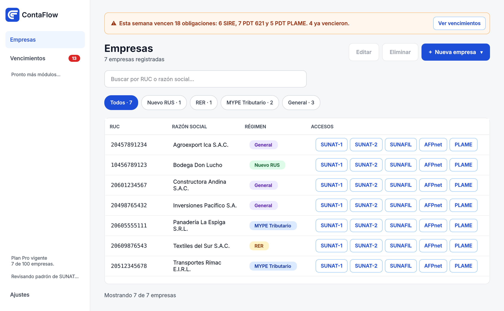
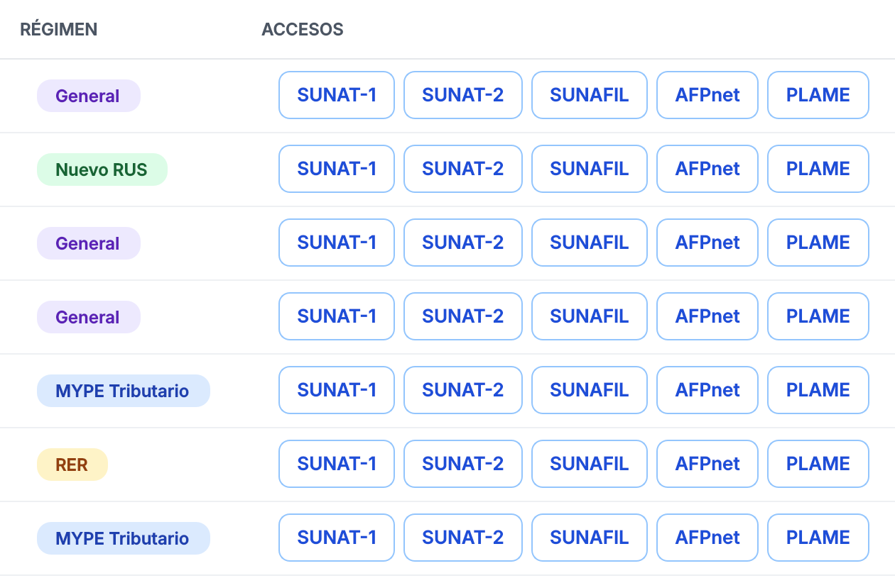

ContaFlow guarda los accesos de cada RUC y abre sesión solo en SUNAT, SUNAFIL, AFPnet y PDT PLAME. Y te avisa antes de cada vencimiento.
Gratis hasta 5 empresas · Windows 10 y 11 · Versión 0.1.0

Accesos
Con un clic, ContaFlow entra por ti a Mis trámites y consultas (SUNAT-1), Mis declaraciones y pagos (SUNAT-2), SUNAFIL, AFPnet y PDT PLAME de cada empresa, sin que copies ni una clave.
Si un portal pide captcha, lo resuelves tú.

Vencimientos
ContaFlow calcula SIRE, PDT 621 y PLAME según el cronograma de SUNAT y el último dígito de cada RUC.
Seguridad
ContaFlow no tiene servidores ni cuentas en la nube: no existe una base central con tus Claves SOL que pueda filtrarse.
Se guardan en el Administrador de credenciales de Windows, que las cifra con tu inicio de sesión. Solo se abren con tu usuario de Windows.
La clave se escribe únicamente en el inicio de sesión de SUNAT, SUNAFIL o AFPnet, en su dirección oficial y segura (https). No se envía a ningún otro lugar.
La base de datos de ContaFlow guarda RUC, razón social y usuario, nunca las claves. Los registros internos solo anotan tiempos.
ContaFlow no evade captchas ni protecciones: si un portal pide verificación, la resuelves tú. Al borrar una empresa, sus claves se borran de Windows.
Planes
por mes, por PC
por mes, por PC
Todos los planes, incluido el Gratis, reciben todas las actualizaciones de ContaFlow.
Ayuda
Es normal en programas nuevos: el navegador aún no conoce el instalador. En Chrome, pulsa "Conservar". En Edge, pulsa "···" y "Conservar"; en la ventana que aparece, abre la flechita junto a "Eliminar" y elige "Conservar de todos modos". Ver el manual paso a paso con imágenes. Descárgalo solo desde esta página.
Pulsa "Más información" y luego "Ejecutar de todas formas". Aparece porque ContaFlow es nuevo.
Una PC con Windows 10 u 11 (64 bits), Google Chrome e internet. No necesita permisos de administrador.
Solo en el Administrador de credenciales de tu Windows, cifradas con tu inicio de sesión. No se envían a ningún servidor. Más sobre seguridad.
Sí. ContaFlow te da una plantilla de Excel para registrar todas tus empresas de una vez.
Al abrirse, ContaFlow revisa si hay una versión nueva y se actualiza solo. Tus empresas y claves se conservan.
Escríbeme por WhatsApp o con el botón verde de abajo a la derecha.
Descarga, instala y registra tu primera empresa. Sin tarjeta.
Descargar ContaFlow para Windows